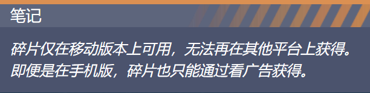
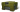
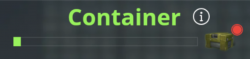

碎片
碎片是一种游戏内货币，专供用于购买幸运礼盒的移动玩家使用。
您可以免费获得它们，并在积累足够的情况下将它们兑换成一个幸运礼盒。
获取碎片
看广告
手机玩家可以看一个广告赚10

观看广告后，玩家必须完成一场战斗或等待一个小时才能解锁另一个广告。
玩家每天最多可以观看 10 个广告，最多可赚取一个额外的幸运礼盒。

用碎片兑换幸运礼盒
一旦玩家获得 100 个碎片，他们就可以将其兑换成 1x
移动版玩家可以通过幸运选项卡中的进度条查看他们收集碎片的进度。

当玩家有足够的碎片购买容器时，会出现一个红点。
有趣的事实
碎片于 2021 年 1 月 29 日首次出现在游戏中。
碎片是游戏中的第三种货币，仅次于水晶和坦克硬币。
碎片过去是被动积累的，但这个机制被放弃了，取而代之的是直接从任务中为玩家提供更多幸运礼盒。